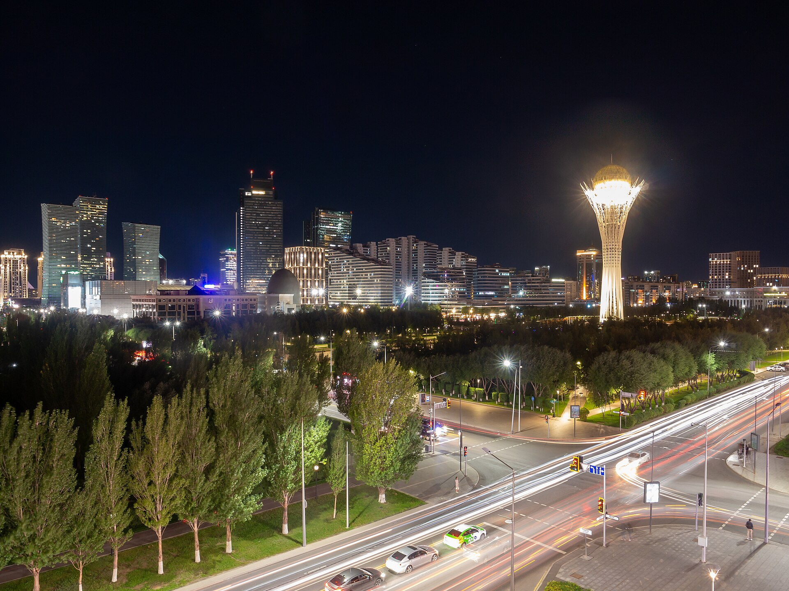

Казахстан предложил Канаде экспортный пакет на $255 млн
16 сентября 2026 года министры торговли Казахстана и Канады в телефонном разговоре обсудили перечень потенциального экспорта по 45 товарным категориям и совместный план экономических действий.

Казахстан приступил к расширению торговых связей с Канадой. 16 сентября 2026 года министр торговли и интеграции Казахстана Арман Шаккалиев провёл телефонный разговор с министром международной торговли Канады Маниндером Сидху.
Что обсуждалось
Казахстан предложил Канаде перечень потенциального экспорта по 45 товарным категориям на сумму около $255 млн. Стороны договорились разработать совместный план экономических действий — упрощение торговли, привлечение инвестиций и отраслевые проекты.
Среди обсуждённых секторов — критические минералы и горнодобыча, ядерная энергетика, авиакосмическая отрасль, сельское хозяйство, транспорт и информационно-коммуникационные технологии (ИКТ).
Мы подготовили перечень потенциальных казахстанских экспортных товаров по 45 товарным категориям на сумму около $255 млн. Мы готовы работать с канадской стороной для определения конкретных механизмов продвижения этих товаров на канадском рынке.
— Арман Шаккалиев, министр торговли и интеграции Казахстана
Двусторонняя торговля
Общий объём двусторонней товарной торговли в 2025 году составил $727,9 млн, что на 53,2% больше по сравнению с 2024 годом (по данным как Astana Times, так и правительства Канады). В Казахстане в настоящее время работает более 160 совместных предприятий с канадским капиталом.
Контекст диверсификации
По данным Astana Times, Казахстан диверсифицирует экспортные маршруты в сторону от зависимого от России трубопровода КТК, по которому прошло около 88% его экспорта сырой нефти в 2025 году.
Национальный фонд страны получил 3,21 трлн тенге (около $7,1 млрд) в первом полугодии 2026 года, при этом инвестиционный доход (43,7% поступлений) почти сравнялся с налогами нефтяного сектора (55,6%).
В цифрах
- Экспортный пакет: около $255 млн
- Товарные категории: 45
- Двусторонняя торговля 2025: $727,9 млн
- Годовой рост: +53,2%
- Совместные предприятия: 160+
- Поступления Нацфонда (1-е полугодие 2026): 3,21 трлн тенге (около $7,1 млрд)
- Доля инвестиционного дохода: 43,7%
- Доля налогов нефтяного сектора: 55,6%
- Доля трубопровода КТК (экспорт нефти 2025): около 88%